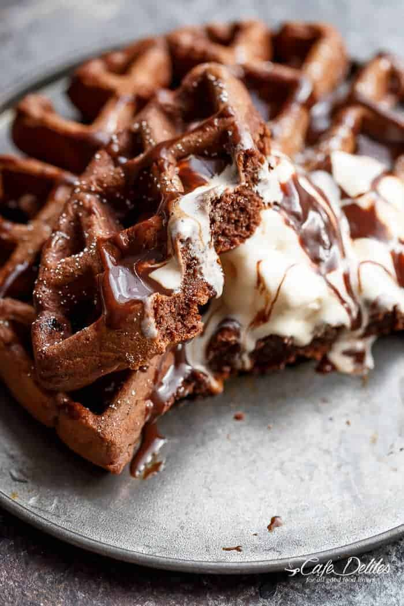
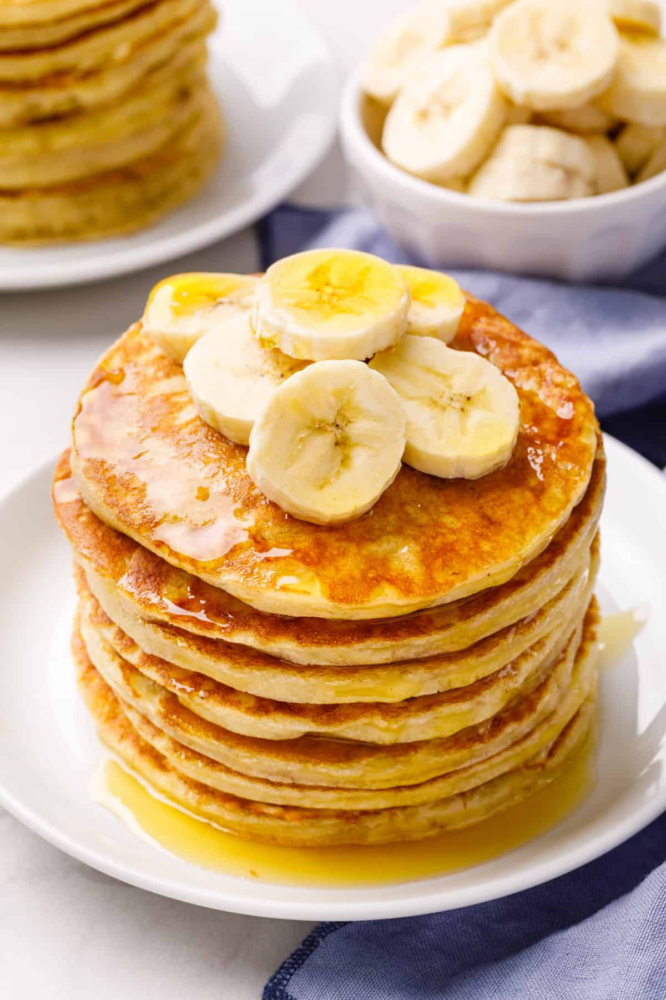

Recipes
Here are some of my favorite recipes that I've collected over the years. I hope you enjoy them as much as I do!
Contents

Double Chocolate Chip Cookies
Double chocolate chip cookies are a decadent delight, blending rich
cocoa with an abundance
of chocolate chips for an indulgent treat
that satisfies every chocolate lover's craving.

Ingredients
- 1 cup (2 sticks) unsalted butter, softened
- 1 cup granulated sugar
- 1 cup brown sugar, packed
- 2 large eggs
- 1 teaspoon vanilla extract
- 2 cups all-purpose flour
- 1/2 cup cocoa powder
- 1 teaspoon baking soda
- 1/2 teaspoon salt
- 1 1/2 cups semi-sweet chocolate chips
- 1/2 cup dark chocolate chunks (optional for extra richness)
Instructions:
- Preheat your oven to 350°F (175°C). Line baking sheets with parchment paper.
- In a large mixing bowl, cream together the softened butter, granulated sugar, and brown sugar until light and fluffy.
- Add the eggs one at a time, beating well after each addition. Stir in the vanilla extract.
- In a separate bowl, whisk together the flour, cocoa powder, baking soda, and salt.
- Gradually add the dry ingredients to the wet ingredients, mixing until just combined.
- Fold in the chocolate chips and chocolate chunks until evenly distributed throughout the cookie dough.
- Drop rounded tablespoons of dough onto the prepared baking sheets, leaving enough space between each cookie.
- Bake in the preheated oven for 10-12 minutes or until the edges are set but the centers are still soft.
- Allow the cookies to cool on the baking sheets for a few minutes before transferring them to a wire rack to cool completely.
- Enjoy your delicious double chocolate chip cookies with a glass of milk or your favorite beverage!
Brownie Waffles
Brownie waffles redefine breakfast decadence, offering a delightful
fusion of crispy edges
and gooey centers, reminiscent of a warm
brownie, topped with your favorite sweet embellishments.

Ingredients
- 1/2 cup (1 stick) unsalted butter
- 8 ounces (about 225g) semi-sweet or bittersweet chocolate, coarsely chopped
- 1 cup granulated sugar
- 3 large eggs
- 1 teaspoon vanilla extract
- 1 cup all-purpose flour
- 1/4 cup unsweetened cocoa powder
- 1/2 teaspoon baking powder
- 1/4 teaspoon salt
- 1 cup chocolate chips or chunks (optional, for extra chocolatey goodness)
Instructions:
- Preheat your oven to 350°F (175°C). Line baking sheets with parchment paper.
- Melt the butter and chopped chocolate together in a heatproof bowl. Stir until smooth and let it cool slightly.
- In a separate bowl, whisk together granulated sugar, eggs, and vanilla extract until well combined.
- Pour the melted chocolate mixture into the sugar and egg mixture, and stir until smooth and well combined.
- Sift together flour, cocoa powder, baking powder, and salt in another bowl.
- Gradually add the dry ingredients to the wet ingredients, mixing until just combined. Fold in chocolate chips or chunks if desired.
- Drop rounded tablespoons of dough onto the prepared baking sheets, leaving enough space between each cookie.
- Bake in the preheated oven for 10-12 minutes or until the edges are set but the centers are still soft.
- Allow the brownie cookies to cool on the baking sheets for a few minutes before transferring them to a wire rack to cool completely.
- Enjoy your fudgy and decadent brownie cookies!

Banana Pancakess
Banana pancakes, a morning delight, infuse fluffy stacks with the
sweet essence of ripe bananas,
creating a breakfast symphony that
perfectly balances comfort and wholesome flavor.

Ingredients
- 1 cup all-purpose flour
- 2 tablespoons sugar
- 1 teaspoon baking powder
- 1/2 teaspoon baking soda
- 1/4 teaspoon salt
- 1 ripe banana, mashed
- 1 cup buttermilk
- 1 large egg
- 2 tablespoons unsalted butter, melted
Instructions:
- In a large bowl, whisk together the flour, sugar, baking powder, baking soda, and salt.
- In a separate bowl, mash the ripe banana and then add the buttermilk, egg, and melted butter. Mix well.
- Pour the wet ingredients into the dry ingredients and stir until just combined. Do not overmix; lumps are okay.
- Preheat a griddle or non-stick skillet over medium heat and lightly grease with butter or cooking spray.
- For each pancake, ladle the batter onto the griddle and cook until bubbles form on the surface. Flip and cook until golden brown.
- Repeat until all the batter is used, adjusting the heat if necessary to prevent burning.
- Serve the banana pancakes warm, topped with maple syrup, sliced bananas, or your favorite toppings.
- Enjoy your delicious and fluffy banana pancakes!